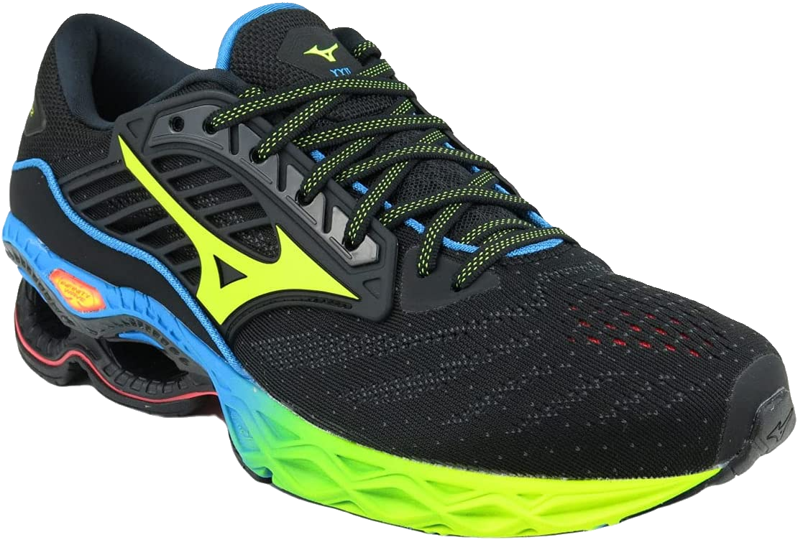

Mizuno

Tênis Mizuno
Excelente para corridas
Um dos tênis de corrida mais duradouros da história de MIZUNO. Tênis de corrida de resistência com o icônico Infinity Wave da MIZUNO. Tecnologia: U4icX, evolução do U4IC, sendo mais leve e mais macio, proporcionando maior conforto durante a corrida. Mizuno Enerzy, EVA leve e macio com maior índice de amortecimento e retorno de energia. X10, Composto de borracha e carbono que oferece maior durabilidade e aderência ao solado na entrada da pisada
R$800,00